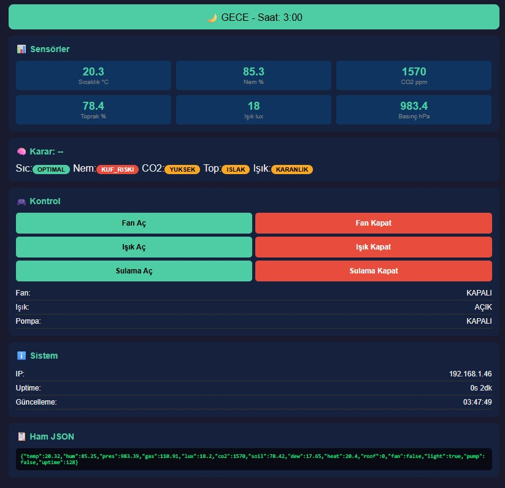
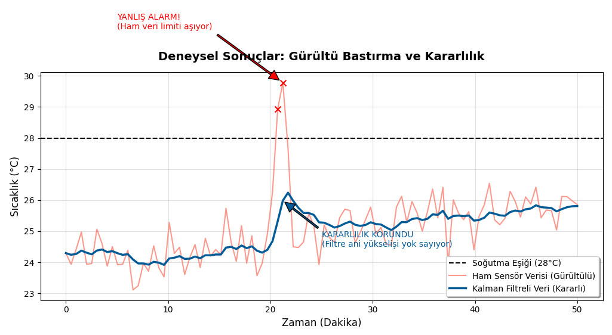

Bitirme Tezi - Akıllı Sera Sistemi
Ekip: Yusuf İslam Budak, Arda Can Baysal, Kaan Özdemir
Danışman: Dr. Öğr. Üyesi Aytaç Uğur Yerden
Küresel iklim değişikliği ve azalan su kaynakları, tarımsal kaynak verimliliğini bir zorunluluk haline getirmiştir. Akıllı Tarım Asistanı (Akıllı Sera Sistemi) projesinde, bitkisel üretimi optimize edebilmek amacıyla nesnelerin interneti (IoT) altyapısı ve makine öğrenmesi algoritmalarını harmanlayan hibrit bir kontrol mekanizması geliştirdik.
Problemin Tanımı ve Donanım Sapmaları
Modern tarım sistemlerinde kullanılan bütçe dostu çevresel sensörlerden elde edilen ham veriler; nem, aşırı donanım sapmaları ve radyo iletim (LoRa) sekintilerinden dolayı hatalı okunabilmektedir. Projemizdeki asıl amaç, veriyi yalnızca sunucuya basmak değil, Arduino tabanlı düğümlerden gelen sinyalleri dinamik olarak iyileştirmektir.
Geliştirilen Hibrit Çözüm (Kalman Filtresi & Karar Ağacı)
Sensör verilerindeki gürültü ve hataların önüne geçmek için Kalman Filtresi (Kalman Filter) adaptasyonunu kullandık. Bu filtreleme katmanından geçirildikten sonra düzeltilmiş (rafine) edilen sıcaklık, nem, ışık ve CO2 verileri; sulama, havalandırma ve aydınlatma eylemlerine karar vermesi için bir Karar Ağacı (Decision Tree) makine öğrenmesi modeline beslenmektedir. Bu yaklaşımla bitki stresini minimize edip su/enerji kullanımını maksimize etmeyi amaçladık.

